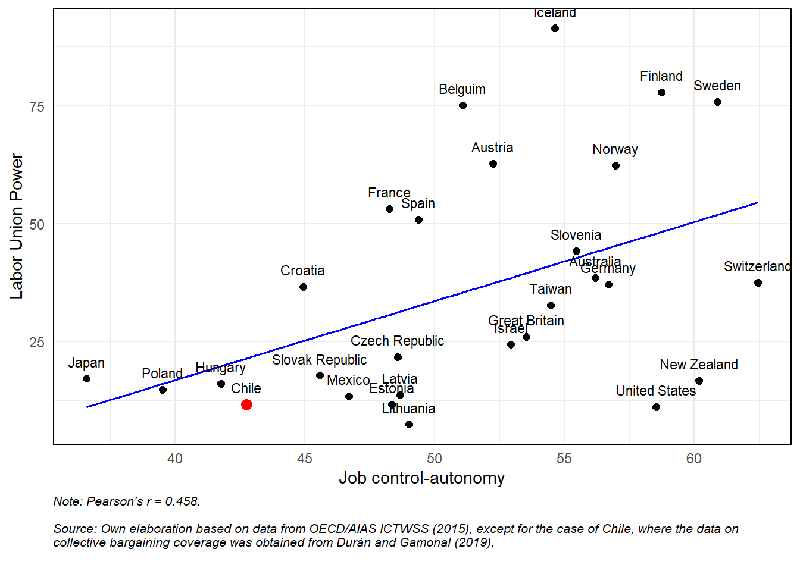

data <- read_excel("input/data/ISSP2015_Data.xlsx")2 Análisis
2.1 Plot Job Control y Labor Union Power
2.1.1 Cargar datos
data <- data %>%
select(c_alphan, name = Name , union_power = `Union power`, job_control = `Job control` )2.1.2 Plot
# Calcular la correlación de Pearson
correlacion <- cor(data$job_control, data$union_power, use = "complete.obs")
# Crear el gráfico
p <- ggplot(data, aes(x = job_control, y = union_power)) +
geom_point(size = 2) +
geom_smooth(method = "lm", se = FALSE, color = "blue", linewidth = 0.6) + # línea de tendencia
geom_text(aes(label = name), vjust = -1.1, size = 3) + # etiquetas con los países
geom_point(data = subset(data, name == "Chile"), color = "red", size = 3) + # destacar Chile
theme_minimal() +
theme(
panel.border = element_rect(colour = "black", fill = NA, linewidth = 0.5), # borde del gráfico
plot.caption = element_text(hjust = 0, size = 8, face = "italic") # estilo del pie
) +
labs(
x = "Job control-autonomy",
y = "Labor Union Power",
caption = "Note: Pearson's r = 0.458.
\nSource: Own elaboration based on data from OECD/AIAS ICTWSS (2015), except for the case of Chile, where the data on \ncollective bargaining coverage was obtained from Durán and Gamonal (2019).
"
)
p 
Labor Union Power: This index was calculated as the average between the union density rate and the collective bargaining coverage rate.
Job control-autonomy: This scale was constructed based on the simple sum of four variables:
Please indicate to what extent you agree or disagree with the following statement about your job: I can work independently (1. Strongly agree… 5. Strongly disagree);
Which of the following statements best describes how your work schedule is decided?
My employer decides when I start and finish work, and I cannot change it myself
I can decide my start and finish time within certain limits
I am completely free to decide when I start and finish work
Which of the following statements best describes how your daily workday is organized?
I am free to decide how my daily workday is organized
I can decide how my workday is organized within certain limits
I am not free to decide how my daily workday is organized
How difficult would it be for you to take one or two hours off during working hours to attend to personal or family matters? (1. Not difficult at all… 5. Very difficult).
All these variables were recoded and transformed into a score from 0 to 4, where higher scores indicate greater perceived autonomy/control. The items were then summed, and the final scale was transformed into a 0-to-100 score. The scale is unidimensional (Principal Axis Factor Analysis: Eigenvalue = 1.45; 39% of explained variance) and internally consistent (Cronbach’s Alpha = 0.70).
# Guardar como imagen PNG
ggsave("output/union_vs_jobcontrol.png", plot = p, width = 7, height = 5, dpi = 300)2.2 Plot Latinobarómetro
Latinobarómetro - mucho o algo de confianza - 2010 en adelante - todos los países - buscar resultados compilados latinobarometro
2.3 Tabla
2.3.1 Data
data <- readRDS("input/data/Conclat_data.rds")# Seleccionar variables
data <- data %>%
select(
# numericas
"pol_confidence","autonomia_control","edad","pol_talk_1to5","political_skills2",
# categoricas
"sexo","nedu","sector","af_sindical","left_party_id","tamanio_local")
# Convertir a tipo factor y numérico
vars_numericas <- c("pol_confidence","autonomia_control","edad","pol_talk_1to5","political_skills2")
vars_categoricas <- c("sexo","nedu","sector","af_sindical","left_party_id","tamanio_local")
data[vars_numericas] <- lapply(data[vars_numericas], as.numeric)
data[vars_categoricas] <- lapply(data[vars_categoricas], as.factor)
# Etiquetar variables
data <- set_label(data, label = c(
pol_confidence = "Political confidence",
autonomia_control = "Job control-autonomy",
edad = "Age",
pol_talk_1to5 = "Political discussion",
political_skills2 = "Political skills",
sexo = "Gender",
nedu = "Educational level",
sector = "Sector (1 = Private)",
af_sindical = "Union membership",
left_party_id = "Left-wing party Identification",
tamanio_local = "Workplace size"
))2.3.2 Table
# Crear tabla resumen para todas las variables seleccionadas
df_summary <- dfSummary(
data,
round.digits = 2,
plain.ascii = FALSE,
style = "multiline",
tmp.img.dir = "/tmp", # Necesario para gráficos mini en HTML
graph.magnif = 0.75,
headings = FALSE,
varnumbers = FALSE,
labels.col = TRUE, # Mostrar etiquetas en vez de nombres
na.col = TRUE,
graph.col = FALSE,
valid.col = TRUE,
col.widths = c(20, 10, 10, 10, 10)
)
# Eliminar columna de nombre técnico si quieres
df_summary$Variable <- NULL
# Imprimir
print(df_summary)| Label | Stats / Values | Freqs (% of Valid) | Valid | Missing |
|---|---|---|---|---|
| Political confidence | Mean (sd) : 1.93 (1.06) min < med < max: 1 < 1.5 < 5 IQR (CV) : 1.5 (0.55) |
1.00 : 841 (41.0%) 1.50 : 339 (16.5%) 2.00 : 196 ( 9.6%) 2.50 : 169 ( 8.2%) 3.00 : 187 ( 9.1%) 3.50 : 156 ( 7.6%) 4.00 : 105 ( 5.1%) 4.50 : 46 ( 2.2%) 5.00 : 11 ( 0.5%) |
2050 (100.0%) |
0 (0.0%) |
| Job control-autonomy | Mean (sd) : 2.28 (0.87) min < med < max: 1 < 2.2 < 5 IQR (CV) : 1.4 (0.38) |
21 distinct values | 2050 (100.0%) |
0 (0.0%) |
| Age | Mean (sd) : 38.83 (12.04) min < med < max: 18 < 37.5 < 81 IQR (CV) : 19 (0.31) |
57 distinct values | 2050 (100.0%) |
0 (0.0%) |
| Political discussion | Mean (sd) : 2.17 (1.22) min < med < max: 1 < 2 < 5 IQR (CV) : 2 (0.56) |
1 : 841 (41.0%) 2 : 437 (21.3%) 3 : 452 (22.0%) 4 : 215 (10.5%) 5 : 105 ( 5.1%) |
2050 (100.0%) |
0 (0.0%) |
| Political skills | Mean (sd) : 2.83 (1.06) min < med < max: 1 < 3 < 5 IQR (CV) : 1.5 (0.38) |
1.00 : 245 (12.0%) 1.50 : 69 ( 3.4%) 2.00 : 351 (17.1%) 2.50 : 183 ( 8.9%) 3.00 : 521 (25.4%) 3.50 : 179 ( 8.7%) 4.00 : 371 (18.1%) 4.50 : 55 ( 2.7%) 5.00 : 76 ( 3.7%) |
2050 (100.0%) |
0 (0.0%) |
| Gender | 1. 1 2. 2 |
967 (47.2%) 1083 (52.8%) |
2050 (100.0%) |
0 (0.0%) |
| Educational level | 1. 1. Hasta Básica completa 2. 2. Hasta Media completa 3. 3. Hasta Universitaria in 4. 4. Universitaria completa |
181 ( 8.8%) 818 (39.9%) 594 (29.0%) 457 (22.3%) |
2050 (100.0%) |
0 (0.0%) |
| Sector (1 = Private) | 1. 0 2. 1 |
588 (28.7%) 1462 (71.3%) |
2050 (100.0%) |
0 (0.0%) |
| Union membership | 1. 0 2. 1 |
1718 (83.8%) 332 (16.2%) |
2050 (100.0%) |
0 (0.0%) |
| Left-wing party Identification | 1. 0 2. 1 |
1875 (91.5%) 175 ( 8.5%) |
2050 (100.0%) |
0 (0.0%) |
| Workplace size | 1. 1-9 2. 10-49 3. 50-199 4. 200 o más |
956 (46.6%) 629 (30.7%) 332 (16.2%) 133 ( 6.5%) |
2050 (100.0%) |
0 (0.0%) |
# Guardar en HTML
print(df_summary, file = "output/tabla_resumen.html")Output file written: C:\Users\danie\Documents\fondecyt\ilpc-sase-2025\output\tabla_resumen.html